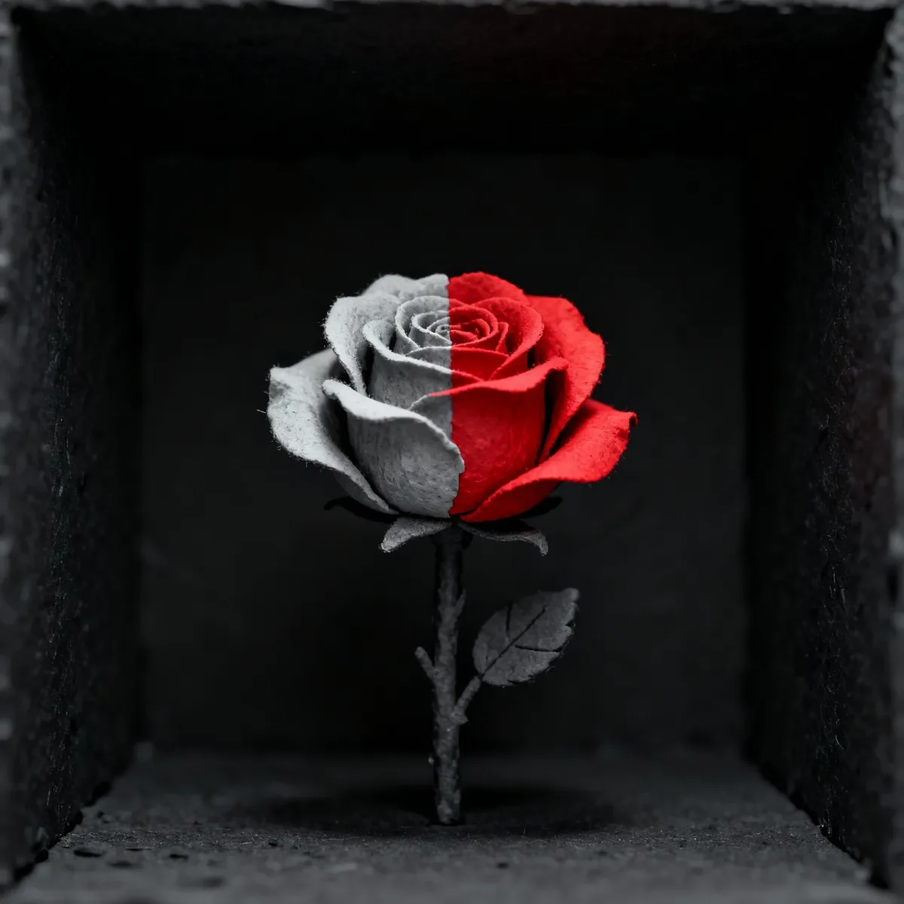

방 안의 침묵은 물리적인 압박처럼 가슴을 짓누르고 있었다. 리디아는 차가운 벽난로 옆에서 팔짱을 낀 채 턱을 굳히고 서 있었다. 용서할 기미라곤 보이지 않는, 그야말로 부동의 자세였다. 그는 그 질문이 나올 것을 알고 있었다. 그 질문은 몇 시간 동안이나 그들의 대화 속 그림자에 도사리고 있는 포식자였다. 마침내 그녀가 입을 열었을 때, 목소리는 크지 않았지만 그를 단숨에 꿰뚫는 가늘고 차가운 철사 같았다.
[The silence in the room had become a physical pressure, a weight on the chest. Lidia stood by the cold fireplace, her arms crossed, her chin set, a study in unforgiving stillness. He knew the question was coming; it had been a predator in the shadows of their conversation for hours. When she finally spoke, her voice wasn't loud, but it was a thin, cold wire that cut straight through him.]
"어젯밤 어디 있었어, 리암?"
["Where were you last night, Liam?"]
그는 뭐라고 말해야만 했다. 진실이 그의 뇌리를 스쳤다. 모든 것이 회복된 세상, 텅 빈 공간으로 색채가 포효하며 되돌아오는 짧고도 눈부신 이미지. 하지만 그 환상 뒤에는 파멸이라는 결과가 가진 중력이 뒤따랐다. 그는 닳고 닳아 익숙한 거짓말의 길을 선택했다.
[He had to say something. The truth flickered in his mind, a brief, dazzling image of a world restored, of color roaring back into the void. But the vision was followed by the gravitational pull of consequence, of ruin. He chose the worn, familiar path of the lie.]
“사무실에 있었어. 말했잖아.”
[“I was at the office. I told you.”]
그 말들은 입안에서 맴도는 모래알 같았다. 그는 더 이상 충격도 느끼지 못했다. 그저 저주가 제 역할을 하자 깊고 익숙한 피로감이 몰려올 뿐이었다. 그들이 햇볕에 그을린 마라케시 시장에서 산 킬림 러그는, 보석빛으로 짜인 태피스트리처럼 매듭마다 이야기를 담고 있었지만, 색이 바래지 않았다.
[The words felt like grit in his mouth. He felt no shock, not anymore, just a profound and familiar exhaustion as the curse did its work. The kilim rug they’d bought in that sun-scorched Marrakesh souk, a tapestry of woven jewel tones, each knot a story, did not fade.]
속이 텅 비어버린 것이었다. 그는 민트 티와 볶은 견과류의 향기, 전리품을 손에 넣었을 때 리디아의 미소에 어렸던 벅찬 기쁨을 아직도 기억할 수 있었다. 이제 그 기억은 시큼하게 변질되었고, 샤프란색과 진홍색 실들은 한결같은 공업용 회색으로 무너져 내렸다. 무늬는 화석이 되었고, 그의 발밑의 유령이 되었다.
[It was hollowed out. He could still recall the scent of mint tea and roasting nuts, the joyful ache in Lidia’s smile as they’d secured their prize. That memory now curdled as the saffron and crimson threads collapsed into a uniform, industrial grey. The pattern became a fossil, a ghost under his feet.]
리암의 저주는 그만의 극장이었다. 리디아에게는 그의 얼굴에 내려앉는 거짓말만이 보일 뿐이었다.
[Liam’s curse was a private theater. Lidia saw only the lie settling on his face.]
“두 시까지?” 그녀가 위험할 정도로 차분한 목소리로 물었다. “당신치고도 신기록이네. 내가 차 몰고 지나가 봤어. 건물 전체가 거대한 검은 유리 덩어리였어, 리암. 무덤처럼. 당신 사무실로 전화도 했지. 허공에 울리기만 하더라. 회계팀 샘한테 문자까지 했어. 당신이 갔어야 할 회사 행사 때문에 다섯 시에 사무실 사람들 전부 퇴근했다던데.”
[“Until two?” she asked, her voice dangerously level. “That’s a new record, even for you. I drove past. The whole building was a monolith of black glass, Liam. A tomb. I called your desk. It rang into the void. I even texted Sam from accounting. He said the office cleared out at five for that corporate event you were supposed to be at.”]
각각의 사실은 돌멩이였고, 그는 우물 바닥에 처박혀 있었다. 그는 또 다른 거짓말이 필요했다. 무너져 내리는 그들 삶의 구조물을 어설프게 땜질할 거짓말이. “우리 몇 명이 합병 건 준비하느라 위층에 남아 있었어. 편두통이 와서. 택시 타고 집에 왔다가, 아침에 차 가지러 다시 갔어.”
[Each fact was a stone, and he was at the bottom of a well. He needed another lie, a shoddy repair for the crumbling architecture of their life. “A few of us stayed on the upper floors to prep for the merger. Had a migraine. I cabbed it home, went back for the car this morning.”]
그는 관자놀이에 손을 가져다 대는, 아주 능숙한 제스처를 취했다. 몸으로 하는 거짓말이었다. 방 건너편에서는, 역사와 판타지, 시집 등 함께한 여정의 스펙트럼이었던 책장의 책등들이 색을 잃고 단조로운 잿빛으로 물러나 늘어섰다.
[He performed the well-practiced gesture, a hand to his temple, a lie told with the body. Across the room, the spines of their books, histories and fantasies and poets, a spectrum of shared journeys, bled out their color, receding into a monotonous, ashen line-up.]
그는 먼지를 삼키는 것 같은 확신으로 알고 있었다. 세 개의 진실한 문장이면 그것들을 다시 불붙여 되살릴 수 있다는 것을. 미안해. 난 거기 없었어. 다른 사람과 함께 있었어. 그 말들은 입 밖으로 내는 것이 불가능했다.
[He knew, with a certainty that felt like swallowing dust, that three true sentences would ignite them back to life. I’m sorry. I wasn’t there. I was with someone else. The words were impossible.]
“당신 택시 안 타잖아.” 그녀가 말했다. 비난이 아닌 사실이었다. 그들의 공유된 삶의 근간이 되는 진실을, 그가 지금 가루로 빻아버리고 있었다.
[“You don’t take cabs,” she stated. A fact, not an accusation. A foundational truth of their shared life he was now grinding into dust.]
“비가 왔어.” 그가 말했다. 거짓말이 입에서 빠져나가는 순간, 그는 창밖을 힐끗 보았다. 정원의 플라타너스가 드리운 찬란한 녹색 덮개가 병적인 금속성 회색으로 변했고, 나뭇잎들은 갑자기 양철이 되어버렸다. 그의 기만이 새어 나와, 유리창 너머의 세상까지 중독시키고 있었다.
[“It was raining,” he said. He glanced at the window as the lie escaped, and the brilliant green canopy of the sycamore in their garden turned a sickly, metallic grey, its leaves suddenly tin. His deceit was leaking out, poisoning the world beyond the glass.]
그는 등을 돌려 조리대에서 무언가 하는 척했다. 그는 자기 자신의 부패를 관리하는 큐레이터이자, 과거의 모습에 대한 정신적 목록의 수호자였다: 그녀가 가장 아끼는 머그잔의 정확한 하늘색, 일요일 아침 부엌의 버터 같은 노란 햇살, 꿀의 깊은 호박색.
[He turned away, busying himself at the counter. He was the curator of his own decay, the keeper of a mental catalogue of how things used to be: the precise cerulean of her favorite mug, the buttery yellow of the Sunday morning light in their kitchen, the deep amber of the honey.]
그는 기억해야만 했다. 만약 그가 진짜 색깔들을 잊어버린다면, 그때야말로 회색이 진정으로 승리하는 것이기 때문이었다.
[He had to remember, for if he forgot the real colors, the grey would have truly won.]
그는 그녀가 생일 선물로 준 12년산 싱글 몰트 위스키를 따랐다. 그날 밤, 촛불보다도 따뜻했던 그녀의 눈빛이 떠올랐다. 위스키의 호박색 영혼이 유리잔 안에서 죽어 흙탕물 색으로 변했다. 그는 그 실패를 단숨에 들이켰다.
[He poured a drink from the 12-year single malt she’d given him for his birthday. He remembered her eyes that night, warmer than the candlelight. The amber soul of the whiskey died in the glass, becoming the color of dirty water. He drank the failure down.]
리디아의 시선이 절박하게, 천천히 방을 훑었다. “나 미쳐가는 것 같아.” 그녀가 스스로를 감싸 안으며 속삭였다. “안갯속에서 사는 기분이야. 벽에 걸린 사진들… 너무 색이 바래 보여. 내가 샀던 저 밝은 노란색 쿠션은 햇볕에 1년은 내놓은 것 같아. 우리 삶에서 색이 빠져나가고 있는 거야, 리암? 나 때문이야? 내가 우울한 건가? 아니면 당신 때문이야? 당신 더는 여기 있기는 한 거야?”
[Lidia’s gaze swept the room, a slow, desperate search. “I feel like I’m going crazy,” she whispered, wrapping her arms around herself. “Like I’m living in a fog. The photos on the wall… they look so washed out. That bright yellow pillow I bought looks like it's been left in the sun for a year. Is the color draining out of our life, Liam? Is it me? Am I depressed? Or is it you? Are you even here anymore?”]
그녀의 말은 완벽했지만, 그녀 자신은 모르는 진단이었다. 절박하게 무언가를 찾는 빛으로 가득 찬 그녀의 눈이 마침내 그들 사이의 작은 테이블에 멈췄다. “그거 그 사람이 준 거지, 그렇지? 당신 고객.”
[Her words were a perfect, unknowing diagnosis. Her eyes, filled with a desperate, searching light, finally landed on the small table between them. “He gave you that, didn’t he? Your client.”]
리암의 시선이 그녀를 따랐다. 가느다란 꽃병에 장미 한 송이가 꽂혀 있었다. 그것은 방 안에 남은 마지막 진정한 색채였고, 불가능할 정도로 선명하고 저항적인 붉은색은 마치 허공에 구멍을 태워버릴 듯했다.
[Liam’s gaze followed hers. In a slender vase sat a single rose. It was the last point of true color in the room, a specimen of such impossible, defiant red it seemed to burn a hole in the air.]
선물. 고객에게서 받은 것이 아니었다. 그는 이 생기 넘치고 아름다운 거짓말을 그들의 집 안으로 들고 온 것이었다. 여기가 벼랑 끝이었다. 그는 진실, 그 끔찍한 세 문장을 말하고, 세상이 다시 생명의 불꽃으로 타오르는 것을 지켜볼 수도 있었다. 그 대가는 그의 모든 것을 잃는 것뿐이었다. 그 말들은 물리적으로 그의 목구멍에 걸려 있었고, 터져 나오기만을 기다리는 압력 같았다.
[A gift. Not from a client. He had carried this vibrant, beautiful lie into their home. This was the precipice. He could speak the truth, the three terrible sentences, and watch the world catch fire with life again. It would only cost him everything. The words were physically in his throat, a pressure waiting for release.]
그는 입을 열었고, 대신 비겁함이 튀어나왔다. “아니,” 그가 쉰 목소리로 말했다. “오늘 아침에 당신 주려고 내가 샀어.”
[He opened his mouth, and the cowardice came out instead. “No,” he rasped. “I bought it for you this morning.”]
장미는 시들지 않았다. 그저 색깔이 짐을 싸서 떠나버렸다. 한순간 벨벳 같은 불꽃이었다가, 다음 순간 부서지기 쉬운 재의 조각상이 되었다. 그는 다른 죽은 것들 사이에서 이제는 죽어버린, 마지막으로 아름다웠던 그것을 응시했다.
[The rose did not wilt. Its color simply packed up and left. One moment, a velvet flame; the next, a brittle sculpture of ash. He stared at it, the final beautiful thing, now dead among the other dead things.]
그녀가 볼 수는 없지만 느낄 수는 있는 그 폐허 위로 첫 눈물이 소리 없이 길을 내는 동안, 그는 리디아의 얼굴을 올려다보았다.
[He looked up at Lidia’s face as the first tears tracked silently through the ruin she could feel but not see.]
그는 그때 알았다. 자신이 무엇인지. 그는 잿빛 방 안의 남자가 아니었다. 그가 바로 잿빛이었다. 그는 한때 색이 있던 자리를 차지한 공허였다. 치유책은 그의 목구멍 안에 있었지만, 그는 병 자체가 되기를 선택한 것이었다.
[He knew, then, what he was. He was not a man in a grey room. He was the grey. He was the void where the color used to be. The cure was in his throat, and he had chosen to be the disease.]